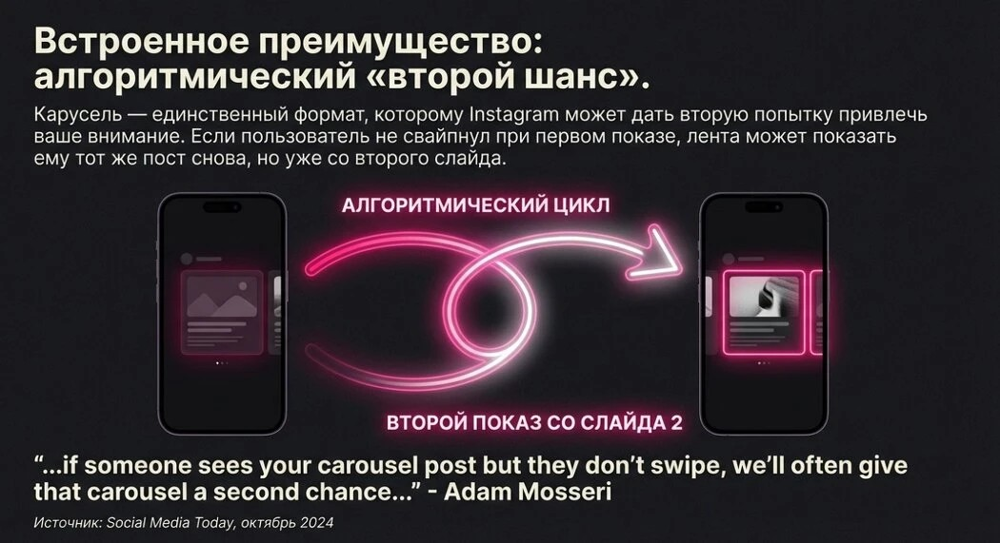
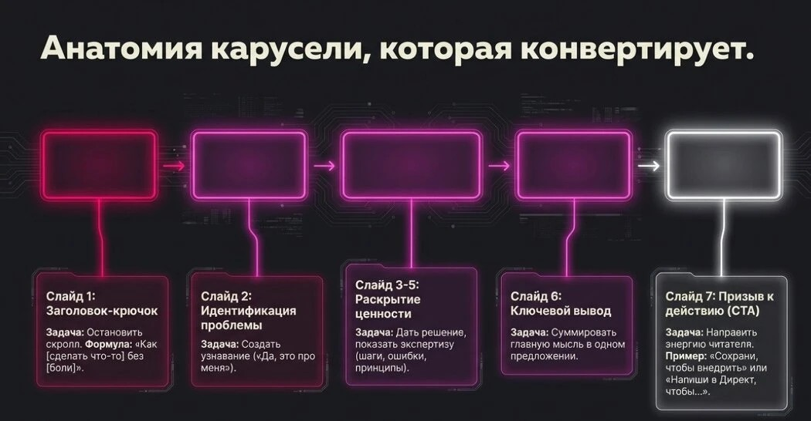
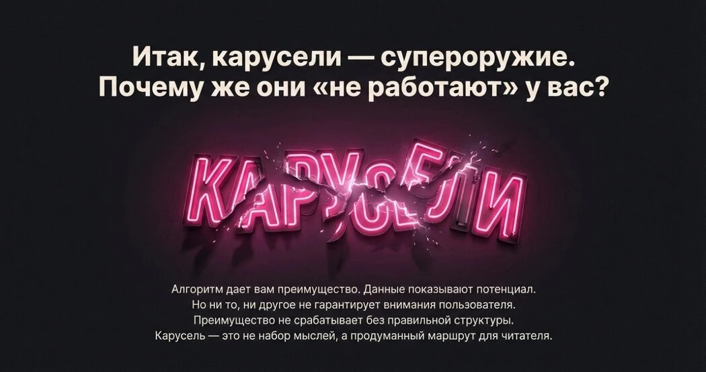
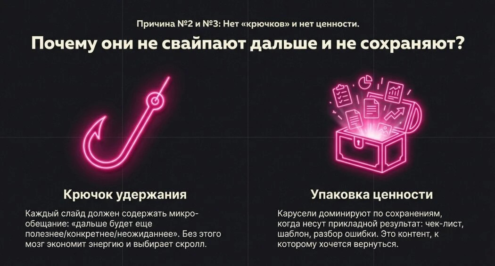
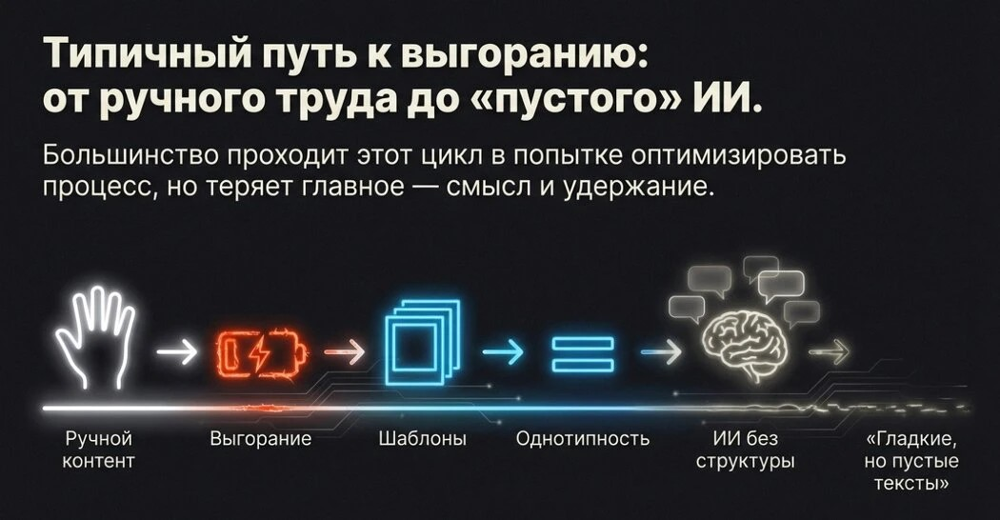

Algorytmy promują w 2026 roku stary, nowy format Instagrama lepiej niż Reels. Tym formatem są posty-karuzele.
Dlaczego warto robić karuzele właśnie teraz? Dlaczego Twoje karuzele nie działają? Dlaczego Reels sprzedaje usługi gorzej niż karuzele? Jak nowoczesne rozwiązanie do tworzenia treści z AI przyspiesza i wzmacnia efekt?

Algorytmiczna druga szansa karuzeli na Instagramie: wbudowana przewaga formatu
01Dlaczego posty-karuzele sprzedają skuteczniej niż Reels
W ciągu ostatnich dwóch lat Instagram mocno się zmienił. Jeśli patrzeć nie na hype, a na liczby i dane, obraz staje się oczywisty:
Reels = uwaga. Karuzele = zaufanie i zgłoszenia.
1. Karuzele rozszerzono do 20 slajdów
To nie przypadkowa aktualizacja. Instagram zwiększył limit slajdów, ponieważ użytkownicy dłużej wchodzą w interakcję z wielostronicowymi treściami, algorytm uznaje takie posty za bardziej wartościowe, a czas oglądania stał się kluczowym czynnikiem promowania.
Właściwie jeden post-karuzela to mini-landing page wewnątrz feedu.
2. Karuzele dają więcej zaangażowania niż Reels
Badania Buffer i Socialinsider, oparte na analizie milionów postów, pokazują, że karuzele uzyskują o 10–15% więcej zaangażowania niż Reels. To jeden z najbardziej angażujących formatów w feedzie Instagrama: polubienia, komentarze i dyskusje częściej pojawiają się właśnie pod karuzelami.
Reels są często oglądane pasywnie. Karuzele — czytane.
3. Karuzele — lider pod względem zapisów
Zapisy to zaufanie. Według danych Socialinsider karuzele są zapisywane częściej niż inne formaty, szczególnie w niszach eksperckich, edukacyjnych i infobiznesowych. Użytkownicy zapisują to, do czego chcą wrócić.
Reels — „obejrzałem i przewinąłem”. Karuzele — „zostawiłem sobie”.
4. Algorytm może pokazać karuzelę kilka razy
Adam Mosseri, szef Instagrama, mówił: jeśli użytkownik nie przewinął karuzeli do końca, Instagram może pokazać ten post ponownie.
Jeden post zyskuje kilka punktów wejścia, większe szanse na zauważenie i dłuższy cykl życia.
5. Karuzele lepiej rozgrzewają do zgłoszenia
Potwierdzają to dane reklamowe: reklamy karuzelowe mogą dawać do +70% konwersji w porównaniu do pojedynczych obrazów.
Dlaczego? Bo osoba czyta argumenty, widzi logikę, rozumie wartość i podejmuje decyzję stopniowo. Dokładnie to, czego potrzeba ekspertom i usługom.

Anatomia karuzeli na Instagramie, która prowadzi do zgłoszenia
Jeśli Twoim celem nie są tylko zasięgi, ale zaufanie, ekspertyza, zgłoszenia i sprzedaż — karuzele są obowiązkowe.
Reels przyprowadzają ludzi. Karuzele przekonują.

02Dlaczego karuzele często nie działają
Sprawdź swoje karuzele pod kątem błędów
W praktyce karuzela nie zawodzi z powodu formatu, tylko dlatego, że nie daje algorytmowi i czytelnikowi sygnałów wartości: nie ma powodu, by przewijać, zapisywać, wracać i dyskutować.
Przyczyna A: brak logiki, brak „trasy” po slajdach
Osoba widzi jeden-dwa slajdy, rozumie, że to zbiór fraz i obrazków bez rozwinięcia, i wychodzi. Sygnały zainteresowania to nie tylko polubienie, ale też czas interakcji, zapisy i ponowne wyświetlenia.
Jeśli nie ma logiki, nie będzie treści, którą chce się zapisać. Wielu układa karuzelę jako „zbiór myśli”, bez trasy. W efekcie nie ma czego przewijać — i zapisów prawie nie ma.
Przyczyna B: brak utrzymania uwagi, brak „haczyków” na kontynuację
Instagram może dać karuzeli kilka szans na wyświetlenie tej samej osobie, zaczynając od pierwszego nieprzewiniętego slajdu. Ale to działa tylko wtedy, gdy jest co przewijać.
Jeśli na drugim-trzecim slajdzie nie pojawia się chęć kontynuowania, ponowne wyświetlenie nie pomoże: użytkownik znowu nie ma powodu przewijać dalej.
Przyczyna C: brak sensu czytania dalej
To częsty błąd w niszach eksperckich: pierwszy slajd — ogólna teza, drugi — kolejna ogólna teza, dalej — „woda”.
Żeby czytelnik szedł dalej, potrzebuje wymiany: „przewijam — i dostaję kolejny konkret lub korzyść”. Wyraźne wezwanie „przewiń dalej” zwiększa zaangażowanie karuzeli.

03Dlaczego Reels nie dają wielu zgłoszeń
Krótkie wideo świetnie działa na zasięg, ale zasięg ≠ zaufanie ≠ zgłoszenie.
Badania pokazują podział ról formatów. Reels są mocniejsze pod względem zasięgu — to góra lejka: analiza ponad 4 mln postów pokazuje około 36% większy reach w porównaniu z karuzelami. Karuzele są mocniejsze pod względem zaangażowania — to środek lejka: około 12% więcej engagementu niż Reels.
Lejek treści wygląda tak:
- Reels: szybki kontakt i uwaga.
- Karuzele: głębia, wartość, zapisy, ponowne czytanie.
Zgłoszenia częściej rodzą się tam, gdzie jest głębia i zaufanie. W treściach eksperckich zapis to wskaźnik tego, że osoba nie tylko obejrzała, ale chce wrócić.
04Droga do wypalenia eksperta w treściach
Ręczne tworzenie treści → wypalenie
Na pierwszym etapie niemal wszyscy eksperci robią to samo: piszą karuzele ręcznie, „z głowy”, opierając się na inspiracji.

Więcej materiałów — na moim blogu na Telegramie
Na kanale zebrane są materiały dla psychologów i ekspertów:
- Instrukcja dotycząca Threads
- Od czego zaczyna się każdy blog
- Po co psychologowi zakładać Threads
- 7 terapeutycznych technik, które zamieniają historie w posty
- Viralowy Reels dla wzrostu kanału na Telegramie
- Przykłady linii produktowej dla psychologów
- Wysokozasięgowy prompt dla Threads
- 7-dniowy cykl „rozgrzewkowy” po konsultacje
- Agent AI dla szerokiego zasięgu na Threads
- W skrócie o promocji na Threads zamiast dziesięciu kursów
- Badanie rynku i pomysły na monetyzację bloga
- Strategia marketingowa dla psychologa
Potrzebujesz systemu treści, a nie pojedynczych postów?
Omówimy Twoją niszę i ułożymy strategię treści pod zgłoszenia.
Omów strategię treści →
Co mówią czytelnicy
„Dziękuję!”
„Dziękuję za tak szczegółowe wyjaśnienie zalet postów-karuzeli)”
„Dawno porzuciłam Insta, ale teraz się zastanowiłam…”
„Dziękuję, Wiktorio! Dziś zapytałam AI o zalety karuzeli, a ono skierowało mnie do Pani (do tego artykułu) 😊. Świetnie to Pani rozpisała! Wszystkiego najlepszego dla Pani i bliskich!”
„Wiktorio, dziękuję za artykuł! A na VK działa tak samo?”